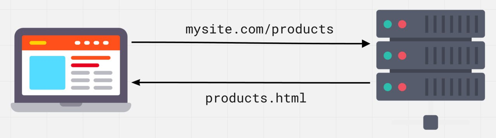
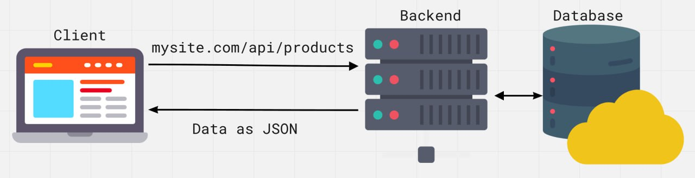
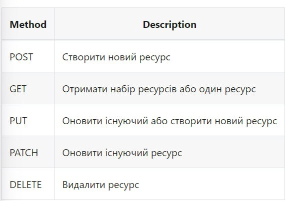
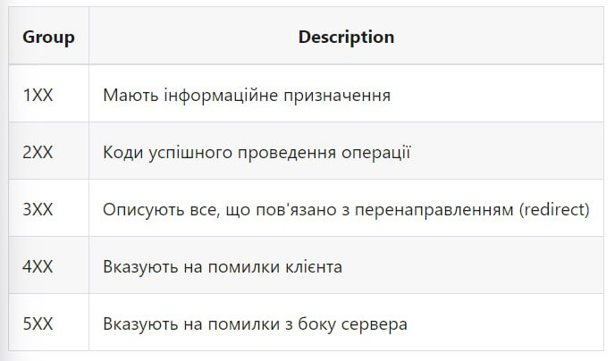
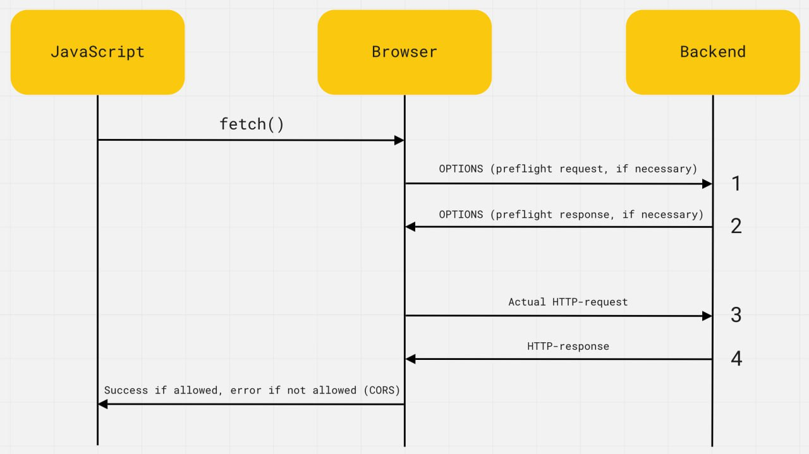

Перед тем как пользователь увидит содержимое сайта на экране браузер запросит сервер чтобы получить это содержимое. HTML файл, изображения стили и шрифты приходят с сервера по HTTP протоколу, набору правил и договоренностей используемых при передачи данных в сети

HTTP (hyper text transfer protocol) - протокол передачи гипертекста,
широко распространенный протокол для передачи веб ресурсов разных типов:
html, css, JS, изображений, аудио, видео и т.д
HTTP основывается на структуре клиент-сервер и моделями запрос-ответ,
которое клиентское приложение инициирует соединени, формирует запрос и
отправляет его на сервер, после чего сервер обрабатывает этот запрос и
формирует ответ и передает его обратно клиенту. Связь между ними
осуществляется посредством ряда HTTP запросов и HTTP ответов
Запрос проходит в несколько этапов
HTTPS протокол (hyper text transfer protocol secure)
Это настройка над протоколом HTTP в который все сообщения между клиентом
и сервером шифруются с целю повышенной безопасности. Обеспечивает защиту
от атак, основаных на прослушивании соединения. Данные передаются поверх
криптографических протоколов - SSL или TLS
При обмене через обычное HTTP соединение все данные передаются в виде
текста и могут быть прочитаны всеми, кто получил доступ к соединению
между клиентом и сервером. Если пользователь совершает покупки онлайн и
заполняет форму заказа, содержащую информацию о кредитной карте, их
финансовые данные гораздо легче украсть, если они передаются в виде
текста. С HTTPS данные будут зашифрованы и хакер не сможет их
расшифровать т.к для расшифрования необходим доступ к закрытому ключу,
хранящемуся на сервере
Протокол HTTPS гарантирует что информация о клиенте, например номера
кредитных карт зашифрованы и не может быть перехвачена в расшифрованом
виде. Посетители могут убедится что сайт безопасен, посмотрев иконку
слева от адресной строки, защищенное соединение обозначается иконкой
замка
Сервер - это компьютер со спец програмным обеспечением. Бэкэнд - это программа, расположенная на сервере, способная обработать входящие HTTP запросы и имеющая набор готовых действий на определенный запрос.

API (интерфейс прикладного программирования) - набор четко
определенных правил, связей между разными програмными компонентами.
Интерфейс описывает что можно попросить приложение сделать и что будет в
результате.
REST (represantaition state transfer) - стиль бэкэнд
архитектуры, основывается на наборе принципов, описывающих каким образом
определяется и адресуются сетевые ресурсы
REST API - бэкэнд построен по принципу REST. Служит прослойкой
между веб приложений и базой данных. Имеет стандартный интерфейс
обращения к ресурсам. Работая как веб сайт мы посылаем HTTP запрос
клиента на сервер, а в ответ вместо HTML страницы получаем данные в JSON
формате.
Формат запроса
REST сервис требует чтобы клиет производил запрос на добавление,
удаление или изменения данных. Запрос может состоять из след частей
HTTP методы. Выделяют несколько основных HTTP методов для работы с REST сервисом

HTTP заголовки
Заголовки содержат служебную информацию относящуюся к контенту запроса.
Например тип контент, который клиент может обработать в ответе от
сервера (заголовок accept) или который описывает тип ресурса, который
клиент отправляет серверу или сервер отправляет клиенту (заголовок
content-type)
Accept: text/html;
Content-type: application/JSON;
MIME типы - варианты типов контента, используется для указания
содержимого запроса и ответ, состоят из типа и подтипа, разделенных
косой чертой "/". К примеру текстовый файл содержащий HTML будет описан
типом text/html. Если файл содержит css он будет описан как text/css,
данные в формате JSON будут описаны как application/JSON. Если клиет
ожидает text/css а получает application/JSON он не сможет распознать и
обработать контент ответа
Пути
Запросы должны содержать путь к ресурсу над которым выполняется
операция. Доступные пути (end поинты, ресурсы) описываются и в
документации бэкэнда
GET < https://bookstore.com/api/orders >
Accept: application/JSON
Такой путь явно указывает на ресурс даже если вы его никогда раньше не
видели, потому что он является иерархическим. Мы выполняетм запрос для
получения коллекции заказа
Чтобы получить один элемент коллекции его индификатор добавляется к
ресурсу. Рассмотрим запрос на чтение одного заказа с индификатором 289
GET < https://bookstore.com/api/orders/289 >
Accept: application/JSON
Последня часть пути называется динамический параметр и в документации
описывается как /ресурс/:параметр. Ресурс не меняется, это путь в целую
коллекцию, а значение параметра для каждого ее элемента
Коды ответов
По запросу клиента сервер отправляет ответ, содержащий код состояния
чтобы информировать клиента о результате операции. Коды деляться на
группы

Нет необходимости помнить все коды каждой группы. Достаточно знать
самые распространенные, остальные можно посмотреть в справочнике HTTP
кода
Запрос-ответ
Предположим что у нас есть приложение которое позволяет просматривать,
создавать, редактировать и удалять клиентов и заказ небольшого книжного
магазина, бэкэнд которого размещен на < https://bookstore.com/api
>. Используя полученные знания запишем псевдо код процесс
запрос-ответ к бэкэнду.
Если мы хотим получить данные обо всех клиентах GET запрос будет
выглядеть следующим образом
GET < https://bookstore.com/api/customers >
Accept: application/JSON
На что сервер отправит нам ответ
Status: 200 OK
Content-type: application/JSON
Body: JSON данные обо всех клиентах
Для получения данных для одного клиента мы указываем его индификатор уточняя его запрос
GET < https://bookstore.com/api/customers/289 >
Accept: application/JSON
На что сервер отправит нам ответ
Status: 200 OK
Content-type: application/JSON
Body: JSON данные о клиенте
Для того чтобы добавить нового клиента выполняем POST запрос
POST < bookstore.com/api/customers/ >
Content-type: application/JSON
Body: {"username": "Vasya", "email": "vasya@gmail.com"}
Сервер добавляет уникальный индификатор и возвращает объект как
результат
Status: 201 CreatedContentType: application/jsonBody: {"id": 170,
"username": "Vasya", "email": "vasya@gmail.com"}
AJAX (Asynchronous java script and XML) - метод получения или отправки данных с последующим обновлением интерфейса по этим данным, без необходимости перезагрузки страницы. Благодаря этому уменьшается время отклика и веб страница становится более интерактивной. Этот процесс можно разобрать на примере загрузки данных
Не смотря на то что в названии технологии находится XML в современном
интернете его заменил JSON, а название оставили как дань памяти. AJAX
трактуется как любое общение с сервером без перезагрузки страницы
API interfase fetch
Интерфейс встроенный в браузер доступен на объекте Window, содержащим
наборы свойств и методов для отправки, получение и обработки ресурсов от
сервера. Метод fetch() предоставляет современный интерфейс для
формирования запроса серверу и построен на promise
fetch(url, options)
Создадим запрос к JSONPlaceholder API - публичному REST API для быстрого прототипирования, который предоставляет коллекцию ненастоящих пользователей /users
fetch('https://jsonplaceholder.typicode.com/users')
.then(response => {
// Обработка ответа
})
.then(data => {
// Обработка ответа
})
.catch(error => {
// Обработка ответа
});
Обработка ответа
Значение возвращается через promise fetch() - это объект со служебной
информацией о состоянии ответа сервера. Экземпляр класса response
содержит разные методы и свойства. В зависимости от типа получаемого
контента используются различные методы для превращения тела ответа в
даные
В первом методе then() выполняется проверка статуса ответа и преобразование данных в правильный формат или явное создание ошибки чтобы обработать неудачный HTTP запрос в блоке catch().
fetch('https://jsonplaceholder.typicode.com/users')
.then(response => {
// Обработка ответа
if (!response.ok) {
throw new Error(response.status);
}
return response.json();
})
.then(data => {
// Обработка ответа
})
.catch(error => {
// Обработка ответа
});
Это необходимо чтобы fetch() правильно среагировал на статус кода 404 который технически не является ошибкой но для клиента это неуспешный результат.
Вкладка Network
В инструментах разработчика на вкладке Network отображаются все HTTP
запросы выполняемые на странице. Выбрав фильтр XHR останутся только
запросы к бэкэнду. После нажатия кнопки в примере через некоторое время
запрос отобразится в списке. Выбрав его можно посмотреть служебную
информацию и тело ответа на подвкладках Headers или Preview Response
Работа с публичными REST API
Каждый бэкэнд уникален. С другой стороны REST API построен по
стандартной архитектуре. Это означает что можно понять принцип их
работы, после чего все что нужно сделать это ознакомиться с
документацией того бэкэнда, который необходимо использовать.
Из документации берем url ресурса для запроса информации о коллекции
ненастоящих пользователей.
https://jsonplaceholder.typicode.com/users
Этот путь состоит из следующих частей
https://jsonplaceholder.typicode.com/users - энд тип, базовый url, точка
входа в API
/users - ресурс к которому мы обращаемся
По щелчку на кнопку fetch users сделаем GET запрос и выведем список
пользователей по полученным данным.
Функция fetchUsers возвращает promise, поэтому к результату ее вызова
мы добаляем цепочку метода then() и catch()
Первичные ошибки
Разберем распространенные ошибки при работе с асинхронным кодом -
попытку использовать данные HTTP запроса вне callback метода then().
Новичок пытается записать результат fetch во внешнюю переменную и
использовать ее
let globalVariaribles; //undefind
// Инициализация извлечения данных
fetch('https://jsonplaceholder.typicode.com/users').then(
response => response.json().then(users => {
console.log("Пользователи внутри then callback", users);
})
);
// Запись результата в глобальную переменную
globalVariaribles = users;
console.log('globalVariaribles внутри fetch callback',
globalVariaribles);
// Здесь нет асинхронных данных
console.log('globalVariaribles снаружи fetch', globalVariaribles);
Вне колюека метода then() данных нет поскольку последний console.log()
выполнится раньше чем поступит ответ сервера. В настоящее время
переменная globalVariaribles еще содержит undefind. Выполнившиеся
значение promise доступно только в колбеке метода then()
Параметры строки запроса
Параметры запроса позволяют указать бэкэнду дополнительные критерии.
Например сколько элементов в коллекции мы хотим получить в запросе.
Возможно необходимо добавить сортировку по свойству объекта, ограничить
выборку и т.д. Список параметров запроса, их название и возможные
значения зависят от бэкэнда
Символ ? показывает старт параметров запроса. Каждый параметр это
пара имя-значение. Символ & используется для указания смыслового
"и", разделяя параметры в строке запроса.
const url = "https://jsonplaceholder.typicode.com/users?_limit=7&_sort=name"
Такой GET запрос вернет массив из 7 польователей из 10, отсортированых по имени в поле name в алфавитном порядке. Подчеркивание _ в именах параметров спецефичные для этого бэкэнда, это не стандарт
Class URLSearchParams
Параметров может быть много и неудобно составлять из них одну длинную
строчку как для читабельности так и для дальнейшего его редактирования.
При составлении строк создается экземпляр класса URLSearchParams и
инициализируется бэкэндом. Результатом будет специальный объект
(етератор) с методами которые в строчном преобразовании возвращают
результ вызова методу toString() свое строчное отображение
const searchParams = new URLSearchParams({
_limit: 5,
_sort: 'name',
});
console.log(searchParams.toString());
const url =
`https://jsonplaceholder.typicode.com/users?${searchParams}`;
console.log(url);
В строчном виде свойство объекта станут параметрами и их значениями. Параметры будут разделены символом &. В случае интерполяции значение в шаблонных строках происходит его преобразование в строку поэтому не нужно вызывать метод toString() при составлении url. Не забывайте указывать начало строки запроса символом "?".
HTTP Заголовки
Класс headers позволяет выполнять разные действия в заголовках HTTP
запроса и ответа. К этим действиям относится извлечение, настройка,
добавление и удаление заголовков
const headers = new Headers({
'content-type': 'application/json',
'custom-header': 'custom value',
});
headers.append('content-type', 'text/bash');
headers.append('custom-header', 'custom, value');
console.log(headers.has('content-type')); //true
console.log(headers.get('content-type')); //application/json,
text/bash
console.log(headers.set('content-type', "application/json")); //map
obj
console.log(headers.delete('custom-header'));
На практике для составления заголовков запроса как правило используется просто литерал объекта со свойствами. В таком случае методов не будет что чаще всего не требуется.
const headers = {
'content-type': 'application/json',
'custom-header': 'custom value',
}
Запрос с использованием заголовков будет смотреться следующим образом
fetch('https://jsonplaceholder.typicode.com/users', {
headers: {
Accept: 'application/json',
},
}).then(response => {
// Отклик
});
Cовременные браузеры добавляют много заголовков по умолчанию в зависимости от операции и тела запроса поэтому нет необходимости явно указывать стандартные заголовки.
По умолчанию HTTP запрос можно производить только в рамках текущего
сайта. При попытке запроса на другой домен, порт или протокол, т.е
выполнить кросс доменный запрос, выдает ошибку. Это сделано из
соображений безопасности и права доступа настраиваются на бэкэнде. Если
бэкэнд не поддерживает кросс доменные запросы фронтэнд разработчик
ничего не сможет с этим поделать в своем коде.
Эта политика браузера называется CORS и расшифровывается как cross
original resurse sharing, где origin это и есть домен, порт и протокол.
Дословный перевод звучит как совместное использование ресурсов между
разными источниками.
На каждом запросе браузер сам добавляет заголовок HTTP origin, где
указывает адрес веб страницы, которая хочет сделать HTTP запрос с веб
страницы https://mysite.com/about на https://myapi.com/users то
заголовки будут следущими
GET /users
Host: myapi.com
Origin: https://mysite.com
Сервер проверяет заголовок origin и если он поддерживает кросс доменные запросы добавляет в ответ спец HTTP заголовок access control allow origin
// Private API
Access-Control-Allow-Origin: https://mysite.com
// Pablic API
Access-Control-Allow-Origin: *
Значением этого заголовка будет разрешен источник origin, в нашем случае это должен быть один сайт mysite, если бэкэнд частный или *, если бэкэнд публичный - позволяет делать запросы кому угодно.
Т.е браузер это определенный посредник между JS кодом и бэкэндом. Он добавляет каждому запросу заголовок origin с правильный значением и проверяет наличие заголовка Access-Control-Allow-Origin в ответе. Если заголовок есть и его значение подходит выполняется исходный запрос и скрипт js получит его результат, в противном случае будет ошибка CORS.
Пагинация
База данных может хранить коллекции, содержащие сотни миллионов записей,
поэтому возвращать всю коллекцию на каждый GET запрос слишком
ресурсозатратно. Размер тела ответа будет слишком велик и время запроса
затянется на десятки секунд. Чем больше данных в ответе от бэкэнда тем
дольше она передается сетью.
К тому же необходимо думать о пользователях, вряд ли им нужны все
1000000 запросов записи сразу. Обработка столь большого кол-ва данных в
ответе и отображении интерфейса требует огромных ресурсов устройства на
котором просматривается веб страница. По статистике пользователи находят
интересующию их информацию на первых страницах.
Допустим наш бэкэнд myapi.com хранит очень большую коллекцию постов
resurs/posts, которые изобразим 12ю элементами на иллюстрации.
На каждый get запрос бэкэнда прийдется вернуть всю коллекцию и мы
столкнемся с проблемами описаными ранее. Для их решения существует
пагинация за которым на первый и каждый последующий get запрос
возвращается не вся коллекция а определенная ее часть. Пагинация
реализуется на бэкэнде и используется на фронтэнде с помощью специальных
параметров запроса.
Колличество элементов ответа
Первый параметр определяет кол-во элементов в ответе от бэкэнда. Пусть в
нашем случае он называется per_page. Стандарт именования пагинации
отсутствует, поэтому их имена зависят от бэкэнд разработчика.
В таком запросе бэкэнда вернет не всю коллекцию из 12 элементов, а
только первые ее 4. Если передать отрицательное значение или значение
большее кол-ва элементов в коллекции то бэкэнд может ответить по разному
- проигнорировать ил вернуть ошибку 400 (BAD REQUEST) в зависимости от
его реализации.
Публичный JSON Placeholder API так же поддерживает пагинацию.
https://github.com/typicode/json-server#paginate
Кол-во ответных элементов контролируется параметром _limit. Всего
коллекция/пост насчитывает 100 элеметов. Изменим значение параметра
_limit в примере и исследует ответ бэкэнда в интерфейсе.
const fetchPostsBtn = document.querySelector('.btn1');
const postLimit = document.querySelector('.posts');
fetchPostsBtn.addEventListener('click', async () => {
try {
const posts = await fetchPosts();
renderPosts(posts);
} catch (error) {
console.log(error);
}
});
async function fetchPosts() {
const response = await axios.get(
'https://jsonplaceholder.typicode.com/posts?_limit=10'
);
return response.data;
}
function renderPosts(posts) {
const markUp = posts
.map(({ id, title, body, userId }) => {
return `
<li>
<h2 class="post-title">${title.slice(0,
30)}</h2>
<p><b>Post ID</b>: ${id}</p>
<p><b>Author ID</b>: ${userId}</p>
<p>${body}</p>
</li>
`; })
.join('');
postLimit.innerHTML = markUp; }
<script
src="https://cdn.jsdelivr.net/npm/axios/dist/axios.min.js"></script>
Номер группы элементов
Указав желаемое кол-во ответных элементов мы всегда получим одинаковый
результат - первые per-page элементов коллекции. Так называемую первую
группу или страницу. Второй параметр пагинации контролирует смещение
внутри коллекции например группы элементов которые мы хотим получить.
Если бэкэнд реализует пагинацию то значение этого параметра по умолчанию
еденица - первая группа или страница элементов
Параметры страниц
Изменяя значения параметров page мы уточняем бэкэнду которую следующую
группу мы хотим получить пока в коллекции не закончатся элементы. Если
указать отрицательное значение или более групп в коллекции - ответ
бэкэнда будет зависеть от его реализации.
const fetchPostsBtn2 = document.querySelector('.btn2');
const postLimit2 = document.querySelector('.posts2');
fetchPostsBtn2.addEventListener('click', async () => {
try {
const posts = await fetchPosts2();
renderPosts2(posts);
} catch (error) {
console.log(error);
}
});
async function fetchPosts2() {
const params = new URLSearchParams({
_limit: 5,
_page: 3,
});
const response = await axios.get(
`https://jsonplaceholder.typicode.com/posts?${params}`
);
return response.data;
}
function renderPosts2(posts) {
const markUp = posts
.map(({ id, title, body, userId }) => {
return `<li>
<h2 class="post-title">${title.slice(0,
30)}</h2>
<p><b>Post ID</b>: ${id}</p>
<p><b>Author ID</b>: ${userId}</p>
<p>${body}</p>
</li>`;
})
.join('');
postLimit2.innerHTML = markUp;
}
Чтобы знать когда кончатся элементы в коллекции и вывести это сообщение
пользователю бэкэнд в каждом ответе возвразает не только массив
элементов но и мета данные о доступном кол-ве групп (страниц), зависищем
от значения параметра per_page или просто общее кол-во в коллекции. В
таком случае вычесление кол-ва групп ложится на плечи фронтэнд
разработчика, JSONPlaceholder Api не реализует этот фукнционал.
Прием "загрузить еще"
Чтобы динамически изменить номер группы по каждому след запросу
достаточно объявить еще одну глобальную переменную, назовем ее page и
установим начальное значение 1 - первая группа элементов. После каждого
успешного запроса в колбеке метода then() будем увеличавать значение
page на 1. Составляя параметры запроса, используем ее значение.
const fetchPostsBtn3 = document.querySelector('.btn3');
const postLimit3 = document.querySelector('.posts3');
let page = 1;
let perPage = 10;
fetchPostsBtn3.addEventListener('click', async () => {
try {
const posts = await fetchPosts3();
renderPosts3(posts);
page += 1;
if (page > 1) {
fetchPostsBtn3.textContent = 'Fetch More Posts';
}
} catch (error) {
console.log(error);
}
});
async function fetchPosts3() {
const params = new URLSearchParams({
_limit: perPage,
_page: page,
});
const response = await axios.get(
`https://jsonplaceholder.typicode.com/posts?${params}`
);
return response.data;
}
После загрузки первой группы элементов текст кнопки изменится
Мы добавили проверку конца коллекции на фронтэнде потому что
JSONPlaceholder API не реализует этот функционал в бэкэнде. В нашем
случае достаточно поделить общее кол-во элементов в коллекции на кол-во
элементов в одной группе. Когда бэкэнд возвращает не кол-во доступных
страниц а общее кол-во элементов доступных в коллекции.